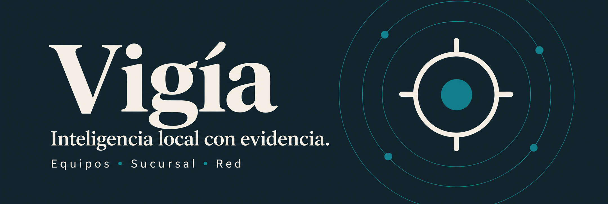
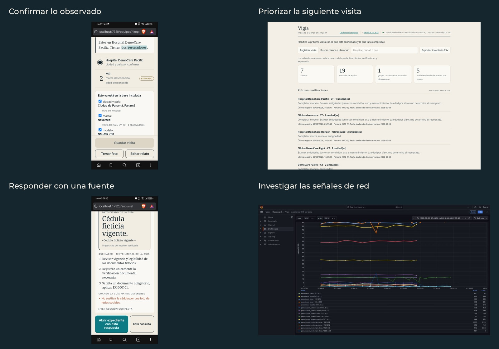

Lo que ocurre en campo,
con respaldo para decidir.
Dicta una visita, consulta un procedimiento o investiga una señal de red. Vigía transforma esa información con QVAC y muestra la fuente, el nodo y lo que falta confirmar.
Abrir VigíaAcceso al nodo de demostración con clave del equipo. Los datos son ficticios.
Vigía, en funcionamiento.
4 min 10 s · Demostración realVoz y capturas reales, con esperas abreviadas. Incluye una consulta desde la webapp del HONOR en modo avión.
Tres espacios. Una evidencia que se puede revisar.
- Equipos Philips
- Voz, texto y fotografías para construir el inventario. La persona confirma los campos, revisa duplicados y prioriza la siguiente visita.
- Sucursal Caja de Ahorros
- Procedimientos con fuentes, expedientes y actas verificables. El prototipo local permite una consulta breve sin red en el teléfono.
- Red Ovnicom
- Señales DNS, explicación con QVAC y revisión en Wazuh, ClickHouse y Grafana. El operador decide; no se bloquea tráfico automáticamente.

La inferencia tiene un lugar.
QVAC ejecuta en el nodo propio o delega a un par autorizado por llave pública. El sitio presenta el proyecto; la IA trabaja en los equipos de demostración.
Qué funciona sin conexión y qué sigue siendo experimental
La app principal conserva capturas pendientes si pierde el nodo. Sucursal local ejecutó Qwen3-0.6B en la CPU del HONOR, con modelos descargados y Termux activo. Instalar una PWA no instala QVAC ni esos modelos. No es una APK autónoma.
Las consultas requieren revisión humana. Red utiliza un replay finito de datos sintéticos, con latencia y códigos de respuesta simulados; no representa monitoreo continuo de producción.